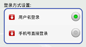
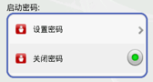
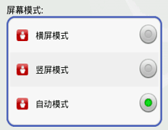
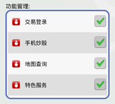

交易登录前请设置您的登录方式（手机号直接登录或用户名登录，默认为用户名登录），系统会自动记录您选择的登录方式。如您需要更换登录方式，请在登录手机银行之前，使用本功能进行登录方式设置。

您可以设置客户端启动密码，以保护隐私信息。密码为6-20位数字、或数字与英文字母组合、或英文字母，英文字母区分大小写。
您可随时更改或者关闭启动密码。客户端启动密码保存在手机中，与手机银行登录密码不同，请注意区分。

您可以选择的屏幕模式包括“横屏模式”，“竖屏模式”，“自动模式”。

您通过功能管理，可以隐藏掉暂时不需要的服务，您也可以在这里设置其重新显示。